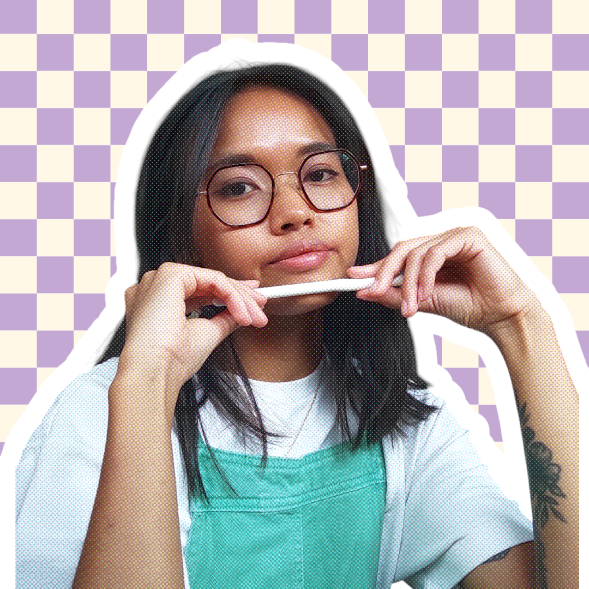

Marina
Lay
Designer UX/UI & graphique
Je conçois des expériences qui fidélisent grâce à des interfaces cohérentes et intuitives, et des univers visuels qui marquent les esprits.

✦ UX/UI Graphisme ✎En quelques mots
Le fil rouge à travers mes expériences professionnelles, c'est la cohérence.
Non seulement à travers les écrans d'un même produit, ou à travers différents produits d'une même marque, mais aussi entre l'expérience proposée et l'image projetée. Parce que si une image de marque cohérente et soignée doit créer une reconnaissance immédiate et intriguer, une expérience fluide et intuitive doit retenir et fidéliser.
Avec une sensibilité particulière pour les questions d'accessibilité et d'inclusivité, j'ai à cœur de faire en sorte que les produits que je design s'adressent à tout le monde : que ce soit à travers la microcopie, les choix graphiques ou les parcours proposés.
Soft skills
- Empathie & écoute active
- Curiosité
- Capacité d'adaptation
- Esprit critique
- Esprit d'équipe
- Créativité
Langues
- 🇫🇷 Français · natif
- 🇬🇧 Anglais · C2
- 🇪🇸 Espagnol · B1
Centres d'intérêts
- Arts manuels & créatifs
- Jeux de simulation & RPG narratifs
- Littérature féministe & décoloniale
- Concerts metal/rock/pop-punk
Mon portfolio
Mon parcours
-
Brand & Web Designer Freelance, Korico Studio
Juin 2026 - Présent- Prise de brief et définition de la stratégie de marque avec le client
- Réalisation de projets d'identité visuelle (logos et déclinaisons, systèmes typographiques, palette de couleurs, illustrations, charte graphique, etc.)
- Déclinaison d'identité visuelle à destination de supports signalétiques, imprimés et web (vitrophanie, menu de restaurant, visuels Instagram, etc.)
- Définition d'un calendrier éditorial, rédaction et réalisation graphique des visuels pour la communication de l'entreprise sur les réseaux sociaux
- Conception et intégration du site internet vitrine de l'entreprise
- Structuration de l'offre, prospection et gestion administrative de l'entreprise
-
UX/UI Designer, Goweb (Roubaix)
Sep. 2025 – Avr. 2026- Conception UX/UI de nouvelles features pour la solution interne OnlyU, dans l'optique de son externalisation
- Rédaction des user stories et des critères d'acceptation
- Partage de pratiques UX et animation d'ateliers avec le pôle design
- Création de visuels pour la communication interne de l'agence
-
Consultante UX/UI, Naomi (Lille)
Déc. 2025 – Jan. 2026Conception d'un nouveau parcours clé pour l'application mobile Naomi, la solution B2C de l'alliance Valiuz :
- Définition des flux utilisateurs pour structurer le parcours de bout en bout
- Maquettes et prototypes Figma dans le respect du Design System existant
- Coordination avec les équipes tech, data et marketing
-
UX/UI Designer, Inouk (Paris)
Juin 2025 – Déc. 2025Dans le cadre de la V4 de l'application mobile Inouk Challenge :
- Définition du tone of voice et amélioration de la microcopie, dans le respect de l'accessibilité numérique
- Optimisation de l'expérience globale et modernisation des interfaces
- Définition et implémentation du Design System (application mobile et site institutionnel)
-
How to design for accessibility: for UX Designers (WCAG 2.2), Udemy
Déc. 2024- How to specifically design for accessibility (the essentials for designers - UX, UI, and Product)
- Accessible color contrast & color independence
- Accessible styling - Border radius, capitalization, fill & color, shadow & elevation, competition, proximity
- Designing accessible charts, graphs, and other data visualizations
- Accessible interaction states and the 10 states to design (focus, hover, etc)
- Accessibility mistakes to avoid
- The top 51 best practices and strategies for designing for accessibility (plus usability & SEO)
- Accessible wording - Verb or noun, short or medium labels, are "read more" links bad, and more
- Designing accessible error messages, menu items, links, progress trackers
- Designing amazing signifiers (aka perceived affordances) for accessibility
- How to combine accessibility tactics
- Accessibility Fundamentals - The who, what, when, where, and why of accessibility
-
Introduction to UX Writing, Udemy
Nov. 2024- Understand what UX writing is – and what it's not
- Get to know the most important quality criteria of good UX writing
- Practice how to write CTAs, Error Messages, Placeholders, and more
- Know the difference between UX writing and other forms of writing
- Know how to ensure high-quality UX writing in theory and practice
- Tackle real-life UX writing tasks with ease
-
UX Designer & Knowledge Manager, Société Générale (Fontenay-sous-Bois)
Sep. 2021 – Mars 2024Amélioration de l'expérience utilisateur de CUBE, le portail interne des 2 000 collaborateurs de la DSI Groupe (France, Inde, Roumanie) :
- Études exploratoires : veille, benchmark UX, entretiens utilisateurs
- Animation d'ateliers de cadrage, co-conception et priorisation
- Maquettes et prototypes interactifs sur Figma, puis tests utilisateurs
-
Master Communication technique multilingue, Université Paris Cité
2022 · Mention Très BienArchitecture de l'information, ergonomie, HTML/CSS, gestion de projet, ingénierie pédagogique, terminologie…